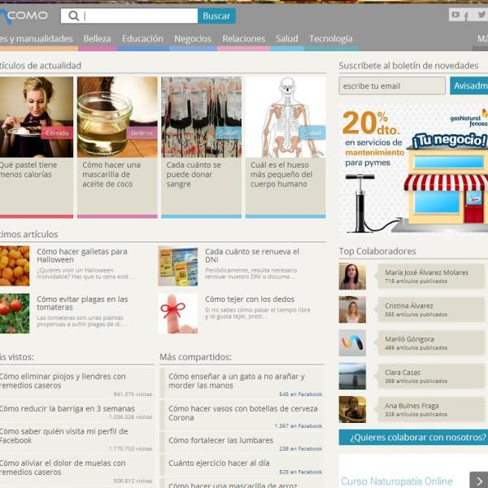
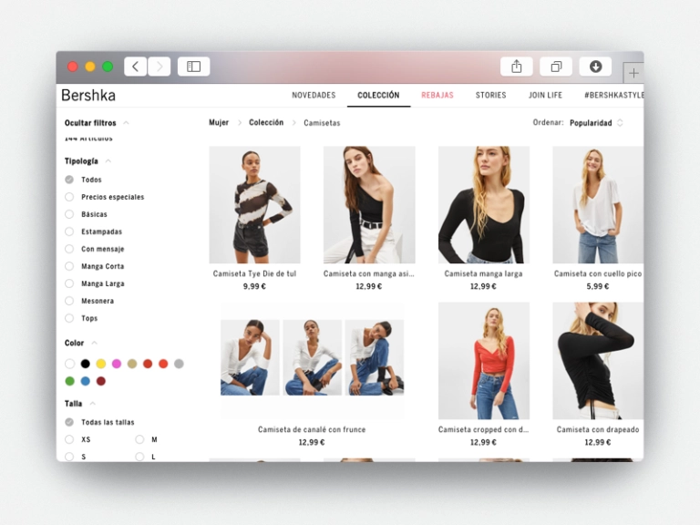

|

Blogs
un blog, es una página en donde se publican temas concretos, con
una organización cronológica en donde suelen mostrase en primer lugar las publicaciones
más recientes. Estas páginas son dinámicas ya que el usuario puede interactuar escribiendo
sus comentarios al autor. En la actualidad estos blogs se están desarrollando en plataformas
sencillas de programación y mantenimiento como CMS de WordPress.
|

Tiendas Online
Son páginas web en los que se venden servicios y productos
a nivel nacional y mundial, este tipo de páginas está en crecimiento debido a que muchas
empresas están implementando estas páginas como estrategias de venta desde diversos
sectores, en la actualidad muchos usuarios realizan transacciones bancarias por Internet
y esto exige su implementación a las empresas, los más conocidos a nivel mundial son Wish,
Alibaba y Amazon.
|
|
Web Coperativa
Son las webs diseñas para describir y representar a una empresa, marca
de internet o negocio. Los elementos básicos que tienen estos tipos de páginas son: página
de inicio, página para dar a conocer al negocio, página del equipo de trabajo, página de
productos y/o servicios y página de contacto, adicionalmente también puede contar con
portafolios, blogs, tiendas virtuales entre otros.
|
Buscadores
Son páginas o sistemas informáticos creados para encontrar páginas web en
base a las consultas de los usuarios a través de un término principal. Entre aquellos que
destaca Bing, Yahoo (uno de los primeros), Google, entre otros.
|
|
Sitios Web de Consumo de videos
Estas páginas brindan contenidos audiovisuales entre los más
conocidos se encuentra YouTube, estás se financian a través de la publicidad que muestran,
también encontramos a Dailymotion, Metacafe, DaleAlPlay, etc
|